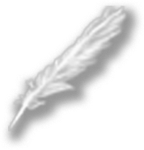

Chargement
Elisabeth Vigée se marie au marchand d’art Jean-Baptiste Le Brun en 1776.
Réputé libertin, on lui déconseille ce mariage. Mais pour échapper aux relations difficiles avec son beau-père, elle accepte.
« Il était assez aimable ; mais sa passion effrénée pour les femmes de mauvaises mœurs, jointe à la passion du jeu, ont causé la ruine de sa fortune et la mienne. »
E. Vigée Le Brun, Souvenirs, 1835-37
La Paix ramenant l’abondance est une toile allégorique d’E. Vigée Le Brun.
Il s’agit d’un morceau de réception présenté à l’Académie royale de peinture et de sculpture en vue de devenir académicienne.
Louis Vigée, père d’Elisabeth, pastelliste reconnu de son temps lui transmet son goût pour la technique du pastel.
Elle permet un travail par estompage, idéal pour les portraits. Le XVIIIe siècle est d’ailleurs l’âge d’or du pastel.
Vigée Le Brun utilisa deux techniques principales : la peinture à l’huile et le pastel. Concernant les sujets de ses oeuvres, elle privilégiera les portraits (environ 600 sur une oeuvre totale d’environ 900 œuvres).
Vigée Le Brun s’inspire de peintres comme Rubens, Rembrandt, Greuze ou encore Van Dyck.
Elle se rendait au Musée du Luxembourg pour copier principalement des portraits et en retirer les enseignements des peintres qu’elle admire.
« On pouvait exactement me comparer à l’abeille, tant j’y récoltais de connaissances… »
E. Vigée Le Brun, Souvenirs, 1835-37
En réaction au rocaille, les années 1780 sont marquées par le néo-classicisme. Il prône un retour à l’antique avec notamment l’utilisation d’allégories comme sur La Paix ramenant l’abondance.
Pour son morceau de réception, E. Vigée Le Brun a choisi la catégorie la plus haute de l’Académie : la peinture d’histoire, fait rare pour une femme à cette époque.